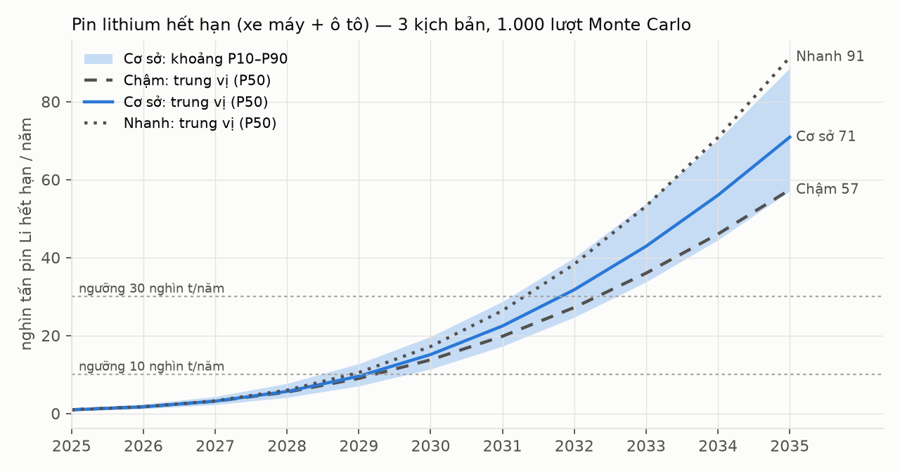
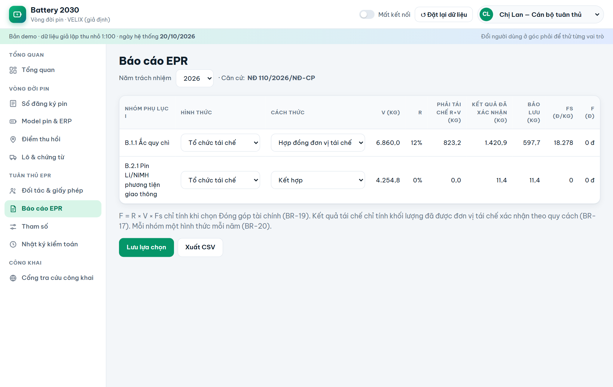
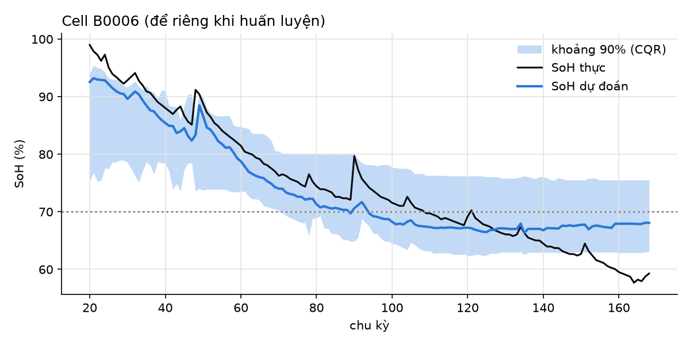
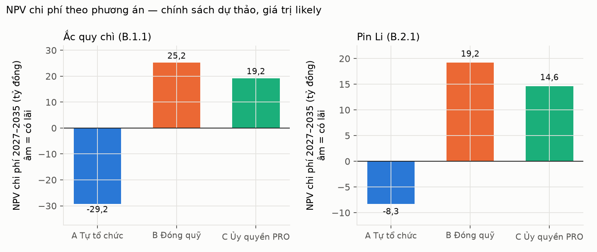

Case study · Business Analysis · Kinh tế tuần hoàn
Battery 2030: pin xe điện hết hạn ở Việt Nam đi đâu, và doanh nghiệp nên chuẩn bị gì?
Thiết kế nền tảng quản lý vòng đời và trách nhiệm thu hồi pin cho một hãng xe máy điện giả định (VELIX), từ văn bản luật đến dự báo, đặc tả, prototype kiểm thử tự động và business case.
≈15 nghìn tấnpin Li hết hạn năm 2030 (P10–P90: 11–20)
≈71 nghìn tấnnăm 2035 — gấp gần 5 lần 2030
0% → 8%?tỷ lệ tái chế bắt buộc pin Li hiện hành → dự thảo từ 2029
73/73test case tự động đạt trên prototype
1. Bài toán
Xe điện ở Việt Nam tăng mạnh từ 2025, nên khoảng 5–10 năm sau sẽ có một làn sóng pin hết hạn. Nhưng chưa ai biết bao nhiêu pin đã bán ra, pin nào sắp hết hạn và đi qua kênh nào. Nghị định 110/2026/NĐ-CP (hiệu lực 25/5/2026) đặt tỷ lệ tái chế bắt buộc 0% cho pin Li của phương tiện giao thông và 12% cho ắc quy chì; tỷ lệ được điều chỉnh lần đầu năm 2029.
2. Phát hiện chính
Mốc 2029 của chính sách trùng với năm pin Li hết hạn vượt 10 nghìn tấn/năm (P10–P90: 2029–2030, cả 3 kịch bản). Lập luận "chưa đủ pin thải để vận hành nhà máy" đúng đến khoảng 2028, sau đó hết đúng.
Ắc quy chì mới là bài toán hiện tại: ≈33 nghìn tấn/năm đến 2030, lớn hơn pin Li cho tới 2033.
Khoảng 70% pin hết hạn năm 2030 đi kênh không có chứng từ (ước lượng theo khoảng). Muốn tăng đời thứ hai, đòn bẩy là thu hồi chính thức: 45% pin Li đủ điều kiện kỹ thuật, nhưng chỉ ≈16% thực sự đến được đời thứ hai.
Việt Nam đo "khối lượng đã tái chế", EU đo "tỷ lệ thu gom": 6 khoảng trống ⛔ (thu hồi, chỉ tiêu thu gom, đời thứ hai, dữ liệu SoH, passport, chi phí đầy đủ).
Business case: tự tổ chức thu hồi thắng cho ắc quy chì ở 100% lượt mô phỏng; với pin Li, kết quả phụ thuộc giá pin đời thứ hai (hòa vốn ≈0,67 triệu đ/kWh theo dự thảo).

Dự báo cohort × Weibull, 1.000 lượt Monte Carlo mỗi kịch bản.
3. Phương pháp
Bước
Kỹ thuật
Sản phẩm
Pháp lý
Bóc tách yêu cầu nguyên văn; ma trận khoảng trống VN × EU
Tiếp nhận pin: nhận mọi hãng, miễn phí, checklist an toàn.

Báo cáo EPR: V, R × V, kết quả, bảo lưu, F theo tham số năm.
6. AI có kiểm soát
Mô hình ước lượng SoH đạt sai số trung bình 2.53 điểm % và độ phủ khoảng tin cậy 88.5%, nhưng chưa đạt yêu cầu vận hành: 94.6% pin vẫn phải đo tay ở ngưỡng 70%. Quyết định: MVP chạy mô hình song song, chỉ bật tự động khi đạt yêu cầu trên dữ liệu pack thật.

Cell để riêng khi huấn luyện; khoảng tin cậy 90% bằng Conformalized Quantile Regression.
7. Business case

Âm = có lãi. Giá trị likely, chính sách dự thảo.
Khuyến nghị: ắc quy chì chọn tự tổ chức tái chế ngay từ năm trách nhiệm 2026; pin Li xây nền tảng và mạng thu hồi ngay, quyết định hình thức 2029–2031 trước 30/6/2028 dựa trên giá pin đời thứ hai đo thực tế.